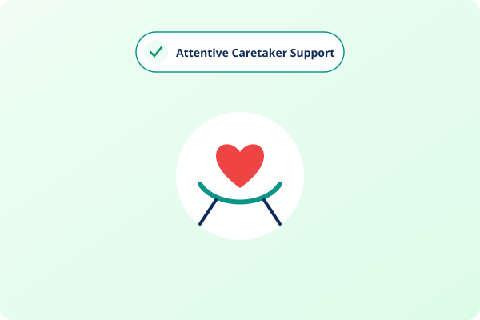
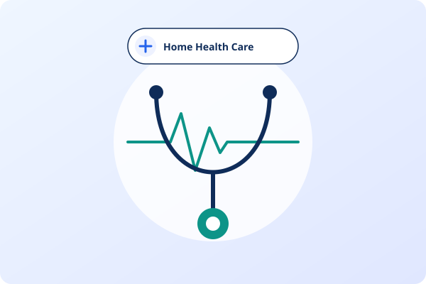
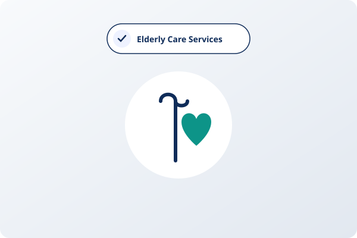

Everyday Living SupportAttentive everyday assistance with daily living, personal grooming, mobility, and companionship.
Nurturing support for newborns, infants, and toddlers, helping new mothers rest and recover.
Call directly: +91 84388 61636Connect with our care coordinator to discuss requirements and availability in Chennai or Tamil Nadu.
Understanding when and how this service provides the greatest comfort and practical support for families.
Essential physical relief and rest following normal or caesarean delivery while baby is gently cared for.
Dependable, attentive daytime infant care allowing parents to focus on work with complete peace of mind.
Extra pairs of experienced hands to manage simultaneous feeding, diaper changes, and soothing routines.
Practical guidance with baby burping, oil massage, warm bath, and establishing comfortable sleep cycles.
A clear breakdown of duties and care activities covered under our Baby Care Services.
Gentle, experienced oil massage techniques followed by warm water baby bathing at the right temperature.
Assisting with formula preparation, expressed breast milk bottle feeding, and thorough burping after meals.
Timely diaper changes, gentle cleaning, application of barrier creams, and maintaining rash-free baby skin.
Gentle rocking, singing, swaddling, and comforting fussy babies to support regular sleep routines.
Washing and sterilizing feeding bottles, nipples, pacifiers, baby utensils, and bibs.
Washing baby clothes with gentle detergents, sun drying, and keeping baby nursery items organized.
Four straightforward steps to arrange dependable home care support for your family.
Submit the enquiry form or call our coordinator with your preferred timings and location in Chennai or Tamil Nadu.
We review your loved one’s specific requirements, daily routines, and household preferences.
We select suitable personnel experienced in providing this specific care assistance.
Service starts with ongoing coordination and regular feedback to ensure complete family satisfaction.
Compassionate support that brings peace of mind, reliable routines, and comfort at home.
Handling infants requires boundless patience, clean habits, and genuine love for little ones.
Regular handwashing, clean attire, and hygienic preparation of all baby feeding tools.
We adapt to your family's parenting philosophy, feeding schedules, and household traditions.
Clear, factual answers to help you make an informed decision.
Available across 35+ major Chennai localities and all over Tamil Nadu.
Outside our primary Chennai localities, Baby Care Services is provided across all districts of Tamil Nadu on a One-Day Full (24-Hour) basis.
Families often combine or transition between these supportive care options.

Everyday Living SupportAttentive everyday assistance with daily living, personal grooming, mobility, and companionship.

Senior Health MonitoringPersonalized health support, vitals monitoring, and recovery assistance in the comfort of your home.

Senior Well-Being & DignityEmpowering senior parents to live safely, comfortably, and happily in their own cherished homes.
Speak directly with our team to discuss timings, availability, and specific care preferences in Chennai or Tamil Nadu.